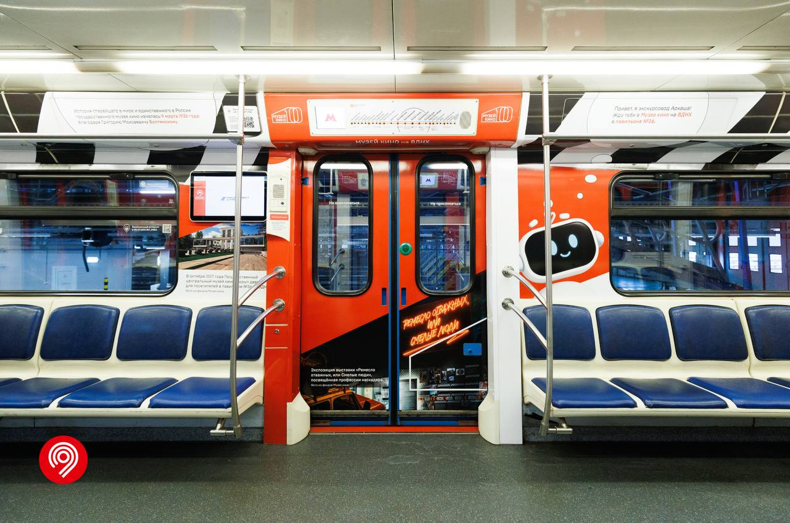

81-760 «Ока» №37071-37072
Восьмивагонный электропоезд модели 81-760 «Ока» с головными вагонами 37071 и 37072. Приписан к депо ТЧ-10 «Свиблово».
С 3 ноября 2026 года состав эксплуатируется в тематическом оформлении «Музей кино», посвящённом Государственному центральному музею кино.
Общая информация о составе
| Параметр | Значение |
|---|---|
| Город | Москва 🇷🇺 |
| Депо/Парк | ТЧ-10 «Свиблово» |
| Модель | 81-760 / 81-761 «Ока» |
| Построен | 11.2012 |
| Начало работы | 18.11.2021 (в ТЧ-10) |
| Текущее состояние | Эксплуатируется |
| Назначение | Пассажирский |
| Текущее брендирование | «Музей кино» (с 03.11.2026) |
Составность
37071 — 30211 — 30212 — 30213 — 30214 — 30215 — 30216 — 37072
8 вагонов
История и особенности
Поступление в метрополитен
Состав поступил через гейт ТЧ-15 «Печатники».
Приписка
Поступил в депо приписки ТЧ-14 «Владыкино».
Перевод в ТЧ-10
Состав передан в депо ТЧ-10 «Свиблово».
«Новый Год 2022» (КРЛ)
Состав был оформлен в новогодней тематике.
Тематическое оформление «Музей кино»
Весь состав получил оформление, посвящённое Государственному центральному музею кино.
Особенности вагонов
- Металлические листы обшивки салона.
- Кнопки адресного открытия на каждой двери (не работают).
- Экстерьер: двери (белый верх / синий низ), фары галогенные, сварной шов внешний.
О тематическом поезде
В вагонах пассажиры:
- 🔹 Увидят более 80 архивных фотографий и других фотоматериалов, а также около 30 киноплакатов из собрания Музея кино.
- 🔹 Узнают о работе музея в наше время — его выставках, экспозициях и кинопоказах.
- 🔹 Найдут кадр из фильма, в котором впервые показали Московский метрополитен.
Также вы узнаете много интересных фактов об отечественном кинематографе. Например, когда состоялся первый публичный киносеанс в России, в каком году вышел первый советский звуковой фильм и какая картина положила начало авантюрно-приключенческому кино в стране.
Тематический состав будет курсировать по Калужско-Рижской линии в течение 6 месяцев.
Слово от Дептранса
«По поручению Мэра Москвы Сергея Собянина мы активно сотрудничаем с культурными, общественными и образовательными организациями. Вместе запускаем транспортные проекты, благодаря которым пассажиры узнают интересные факты о столице и ее истории. Сегодня на линию вышел новый брендированный состав. Он посвящен Государственному центральному музею кино. Это уже 20-й тематический поезд в этом году и второй состав, посвященный кинематографу. В его вагонах разместили свыше 110 уникальных архивных материалов. Это поможет погрузиться в прошлое отечественного киноискусства и познакомиться с культовыми картинами», — сказал Максим Ликсутов.
Фотогалерея

Головной вагон №37071 с тематическим оформлением «Музей кино».

Внутреннее оформление тематического вагона.
Нажмите на фото для увеличения
"Ока" — это поезд, который стал символом обновления московского метро. А "Музей кино" на его боках напоминает о том, что метро — это не только транспорт, но и культурное пространство».